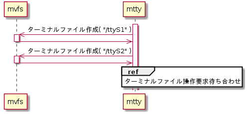
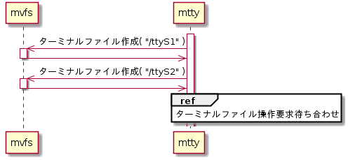

ターミナルファイル作成機能
mtty起動時にターミナルファイルを作成する。シーケンスを下記に示す。
シーケンス


ターミナルファイル作成
ターミナルファイルの作成はmvfsライブラリのLibMvfsMount()を用いる。作成するターミナルファイル一覧を以下に示す。
作成ターミナルファイル一覧
| # | ttyファイル | 関係デバイスファイル | 概要 |
| 1 | /ttyS1 | /serial1 | シリアルポート1（COM1） |
| 2 | /ttyS2 | /serial2 | シリアルポート2（COM2） |